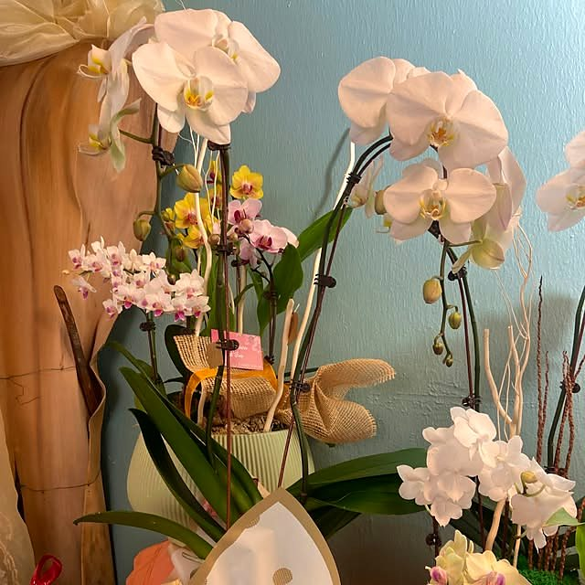
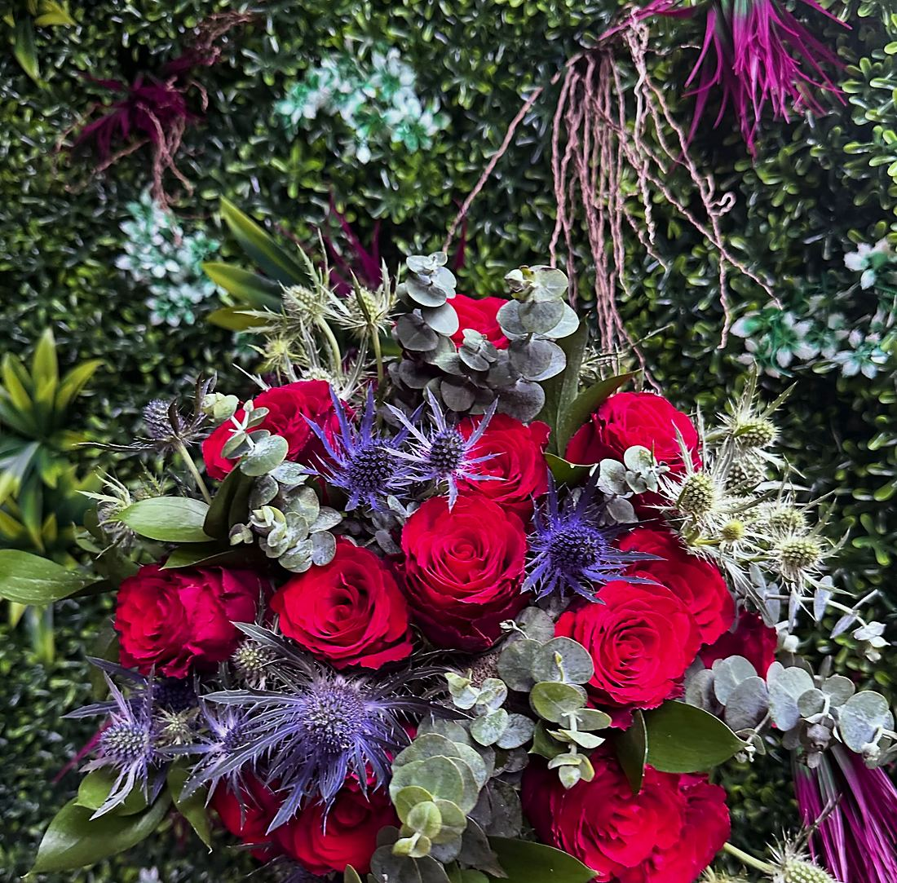
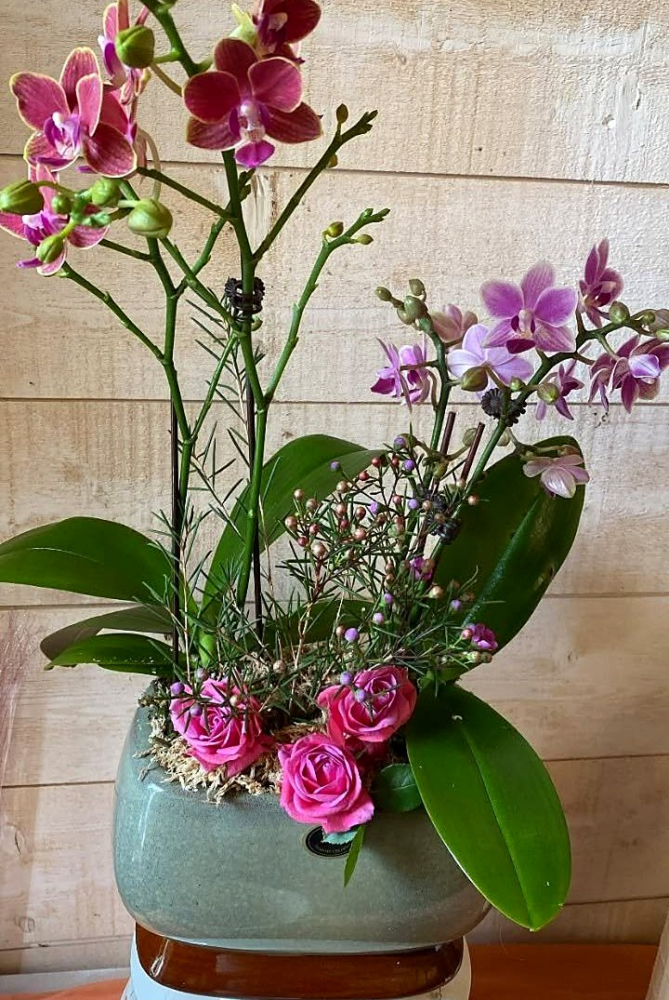
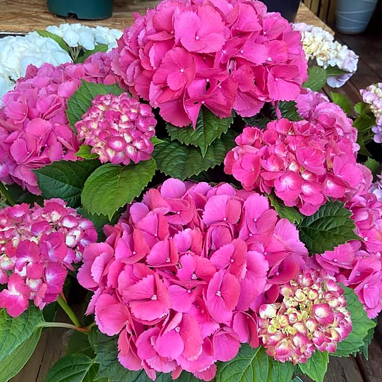
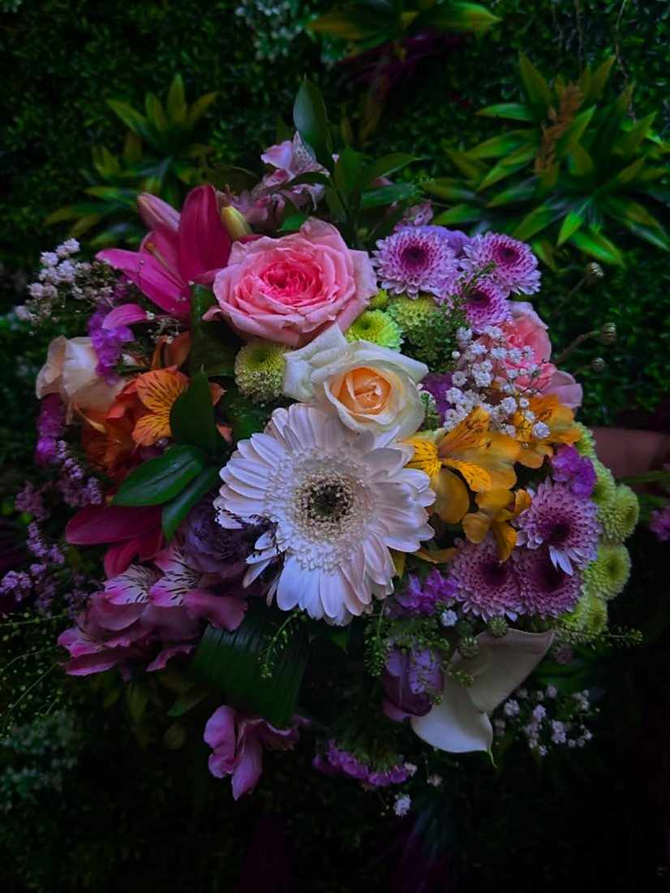
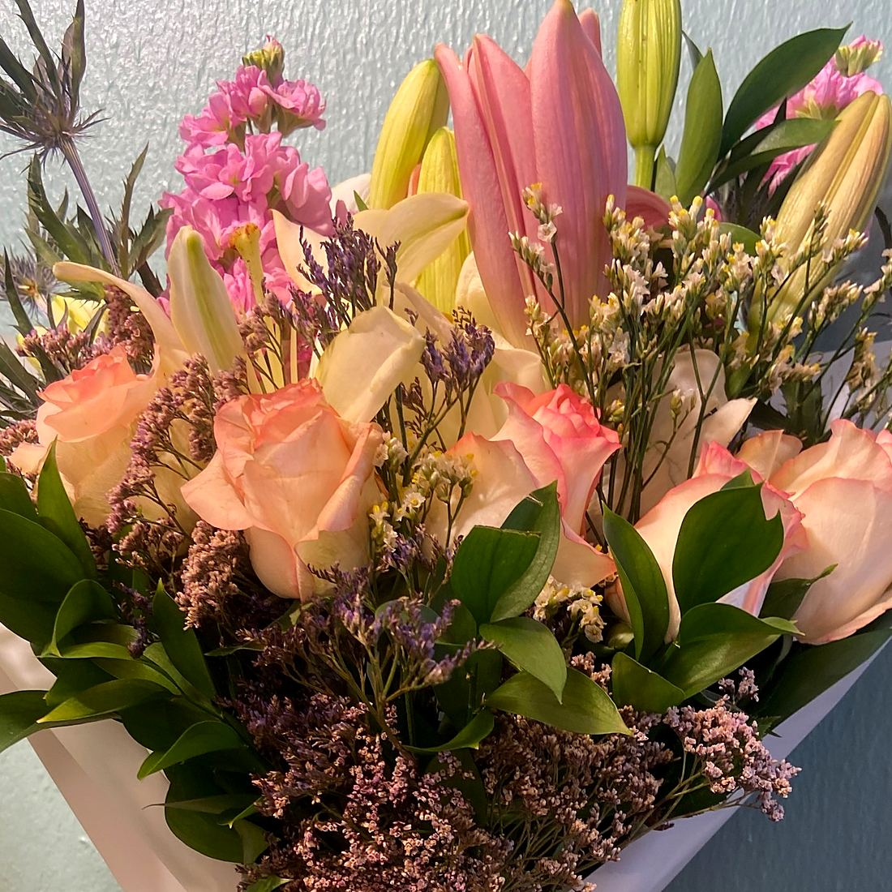
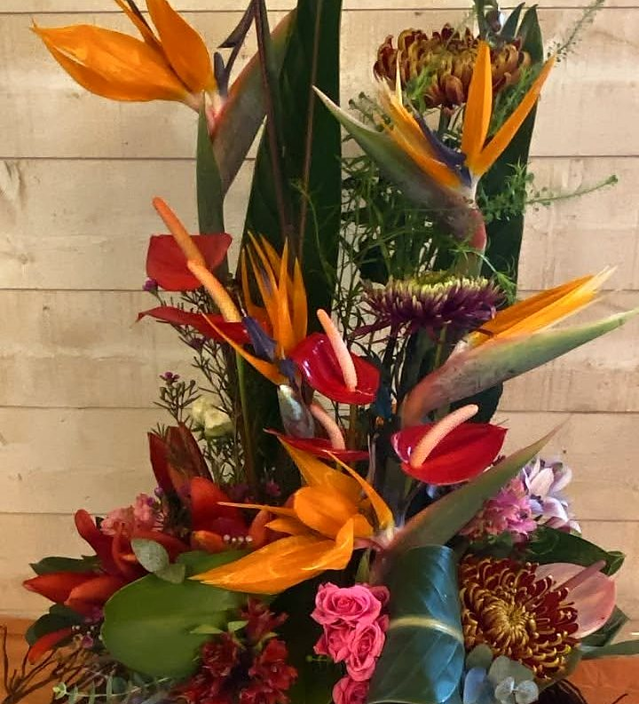
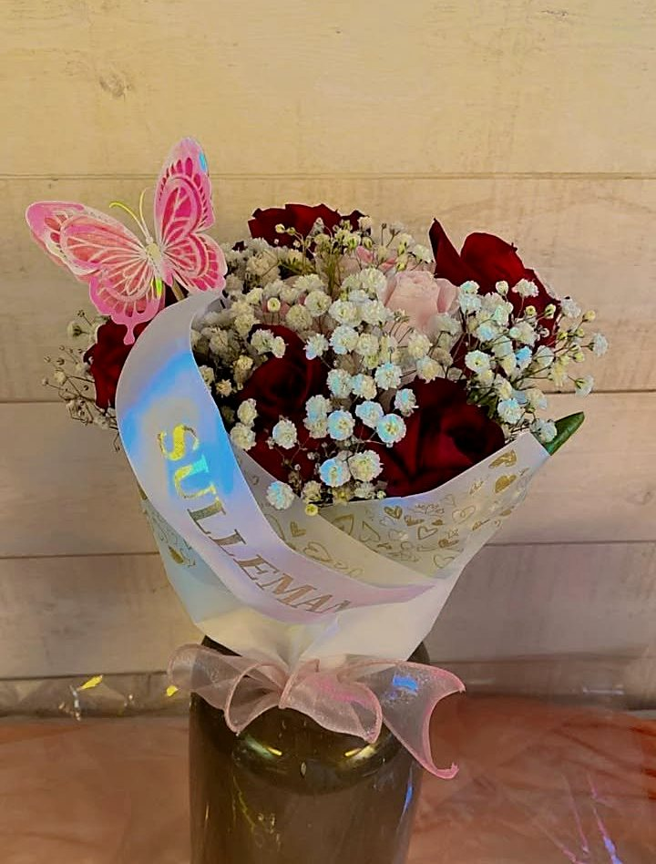
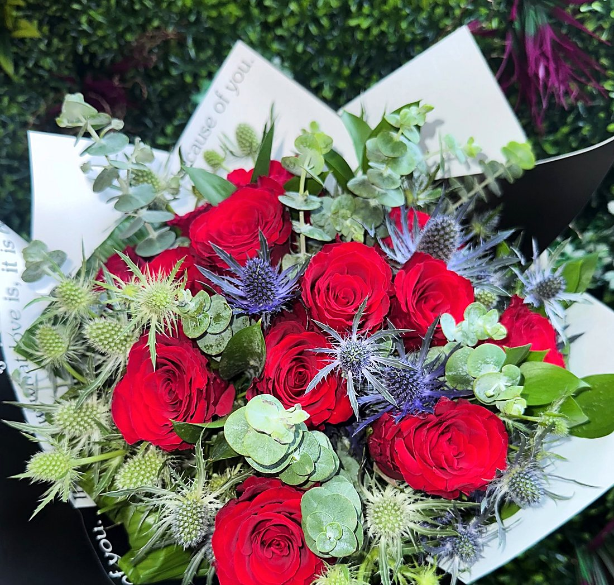

Pots d’orchidées
« Des pots d’orchidées raffinés qui illumineront votre intérieur. »
Instagram · 19 mai 2026
Votre artisan fleuriste · Saint-Denis
« Certaines fleurs ne fanent pas… elles deviennent des souvenirs. »Publication du 19 septembre 2026
La boutique
Rue des Manguiers, à Créteil Village, la boutique Les Fleurs d’Isa a été reprise en mars 2025 par Isabelle Grondin.
Isabelle y apporte trente années d’expérience dans l’événementiel et les mariages, et une vraie prédilection pour les orchidées, « symbole d’élégance et de passion ».
Chaque bouquet se compose avec soin, sur commande ou pour une création personnalisée : « des couleurs douces, des fleurs soigneusement sélectionnées et une touche d’élégance pour illuminer chaque occasion spéciale ».

Le cœur de la maison
Dès l’entrée, un grand choix d’orchidées aux couleurs multiples, prêtes à offrir ou à sublimer un intérieur. Et, au fil des saisons, les pots fleuris arrivent en boutique.

« Des pots d’orchidées raffinés qui illumineront votre intérieur. »
Instagram · 19 mai 2026
« Pot d’hortensias disponible cette année. Une grande palette de couleurs. »
Instagram · 19 mai 2026Dans l’atelier
« Des fleurs fraîches, de la douceur et un atelier rempli de poésie. » Quelques créations publiées sur la page de la boutique.




← faites glisser →
Ce qu’on en dit
Fleuriste très professionnelle. S’adapte au budget tout en restant généreuse sur les compositions.
Avis Google · juillet 2026
Elle a réalisé une composition magnifique pour ma mamie, qui a absolument adoré. […] On sent tout de suite le sérieux et la passion du métier.
Avis Google · printemps 2026
Elle a personnellement pris ma commande et effectué la livraison […] le bouquet et les fleurs sont juste magnifiques.
Avis Google · juin 2026
Offrir pour Noël
Pour les fêtes, offrez une création des Fleurs d’Isa : un bouquet composé pour la personne qui vous est chère, une orchidée à offrir ou une composition pour la table du réveillon.
« Offrez des fleurs, offrez une émotion. »Les Fleurs d’Isa

Passer à la boutique